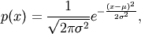
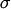
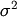
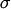
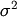
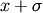
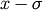
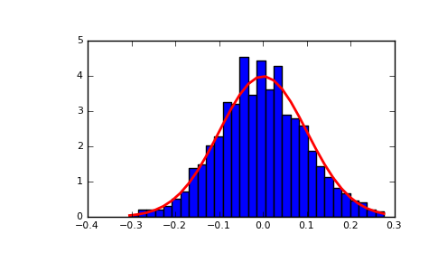

numpy.random.normal¶
- numpy.random.normal(loc=0.0, scale=1.0, size=None)¶
Draw random samples from a normal (Gaussian) distribution.
The probability density function of the normal distribution, first derived by De Moivre and 200 years later by both Gauss and Laplace independently [R205], is often called the bell curve because of its characteristic shape (see the example below).
The normal distributions occurs often in nature. For example, it describes the commonly occurring distribution of samples influenced by a large number of tiny, random disturbances, each with its own unique distribution [R205].
Parameters : loc : float
Mean (“centre”) of the distribution.
scale : float
Standard deviation (spread or “width”) of the distribution.
size : tuple of ints
Output shape. If the given shape is, e.g., (m, n, k), then m * n * k samples are drawn.
See also
- scipy.stats.distributions.norm
- probability density function, distribution or cumulative density function, etc.
Notes
The probability density for the Gaussian distribution is

where
 is the mean and  the standard deviation.
The square of the standard deviation, , is called the
variance.
is the mean and  the standard deviation.
The square of the standard deviation, , is called the
variance.The function has its peak at the mean, and its “spread” increases with the standard deviation (the function reaches 0.607 times its maximum at  and  [R205]). This implies that numpy.random.normal is more likely to return samples lying close to the mean, rather than those far away.
References
[R204] Wikipedia, “Normal distribution”, http://en.wikipedia.org/wiki/Normal_distribution [R205] (1, 2, 3, 4) P. R. Peebles Jr., “Central Limit Theorem” in “Probability, Random Variables and Random Signal Principles”, 4th ed., 2001, pp. 51, 51, 125. Examples
Draw samples from the distribution:
>>> mu, sigma = 0, 0.1 # mean and standard deviation >>> s = np.random.normal(mu, sigma, 1000)
Verify the mean and the variance:
>>> abs(mu - np.mean(s)) < 0.01 True
>>> abs(sigma - np.std(s, ddof=1)) < 0.01 True
Display the histogram of the samples, along with the probability density function:
>>> import matplotlib.pyplot as plt >>> count, bins, ignored = plt.hist(s, 30, normed=True) >>> plt.plot(bins, 1/(sigma * np.sqrt(2 * np.pi)) * ... np.exp( - (bins - mu)**2 / (2 * sigma**2) ), ... linewidth=2, color='r') >>> plt.show()
(Source code, png, pdf)


{kind=link}